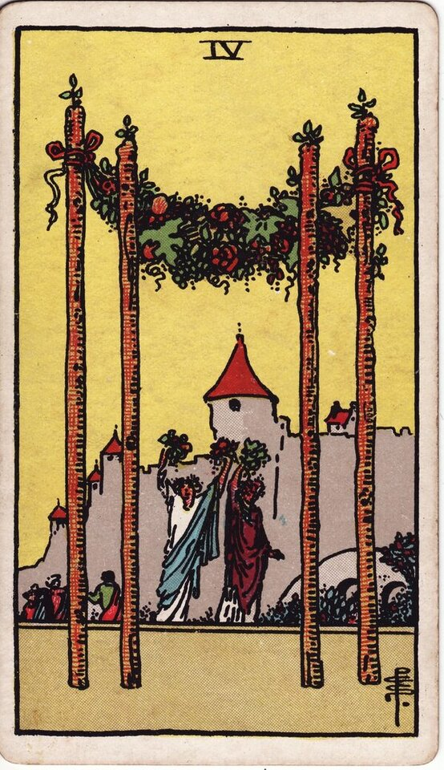

Minor Arcana · Suit of Wands
Four of Wands Tarot Card Meaning
The Four of Wands is the celebration card — a milestone reached, a homecoming, stability worth marking. Want to know what it means in your spread? Every reader on our line is hand-vetted — connect in under 60 seconds, $1 for your first minute, hang up anytime.
- Hand-vetted readers
- Available 24/7
- Hang up anytime

Four of Wands — What It Shows
Four wands stand upright, joined by a garland of flowers and fruit like a celebratory archway. Two figures raise bouquets in welcome, with a manor and townsfolk behind them. After the Ace's spark, the Two's plan, and the Three's expansion, the Four is the arrival — a stable foundation reached and a reason to celebrate. It's the most openly joyful card in the suit: belonging, home, and shared happiness.
Four of Wands Upright Meaning
Upright, the Four of Wands is a happy milestone. Effort has produced something solid enough to stand on and celebrate — a commitment, a homecoming, an achievement, a community welcoming you in. It carries warmth, security, and the relief of a stable footing after movement.
Four of Wands Reversed Meaning
Reversed, the celebration is muted or delayed. Tension at home, a milestone that doesn't feel earned, instability behind a harmonious front, or a transition (a move, an event) that's bumpier than hoped. The joy is still available; something is dimming it.
Four of Wands in Love & Relationships
In love, this is one of the warmest cards in the deck — engagement, moving in, meeting families, a wedding, or simply a relationship hitting a happy, secure milestone. Example: a caller unsure whether a relationship was "going anywhere" pulled the Four of Wands; the reading framed it as the connection genuinely building toward a stable, celebrated next step rather than drifting.
Four of Wands in Career & Money
For work it's a success worth marking — completing a project, a promotion, a stable new role, or a team milestone. Example: someone who'd been grinding on a long project drew this card; the message was that a real milestone is at hand and it's healthy to pause and acknowledge it before chasing the next thing.
Four of Wands as Advice
As advice: let yourself arrive. Mark the milestone, lean into stability and community, and don't rush past the good moment toward the next climb.
What People Ask About the Four of Wands
Common questions readers hear about this card:
"Is the Four of Wands a marriage card?"
Often — engagement, wedding, or committed milestone, especially with other strong love cards.
"Does it mean moving house?"
It can — home, relocation, and homecoming are core themes.
"Will my ex and I reunite?"
It can signal a warm reconnection, but read the surrounding cards before assuming.
"Is it always positive?"
Upright, almost always warm; reversed asks what's dimming the celebration.
Four of Wands — Yes or No?
Upright: a clear yes, especially for commitment, stability, and celebration. Reversed: "yes, but delayed or with friction."
Four of Wands Reversed in Love & Career
Reversed, this normally-joyful card asks what's dimming the celebration. In love, it can mean a milestone that feels rushed or hollow, tension under a harmonious surface, a delayed engagement or move, or a relationship that looks settled to outsiders but feels unstable inside. It rarely means the bond is doomed — more that the foundation needs attention before the party. In career, reversed it's a success that doesn't satisfy, a team that looks aligned but isn't, an unstable "stable" job, or a transition (a move, a new role) that's bumpier than expected. The reversed Four's question is always the same: is the structure under the celebration actually solid? A live reader can help you see where it's strong and where it's propped up.
Four of Wands Timing in a Reading
Timing is the least precise thing tarot does, so treat this as a lean, not a promise. The Four of Wands often attaches to a specific upcoming event — a celebration, move, or milestone — so readers tend to place it soon, within weeks, sometimes around a date that already exists in your life. Reversed, the event slips or the timing feels off. A live reader can narrow this from the cards around it and your question far better than the card alone.
Four of Wands Card Combinations
Context changes everything — a few pairings readers see often:
Four of Wands + The Lovers
Engagement or a committed milestone — a values-aligned union.
Four of Wands + Ten of Cups
Lasting family happiness and emotional fulfilment at home.
Four of Wands + The Tower
A celebration or "stable" foundation that's shakier than it looks.
Four of Wands in a Tarot Reading
A meanings page is the map; a live reading is the territory. The Four of Wands shifts with its position and the cards around it — which is what a hand-vetted reader interprets for your question. See the full Suit of Wands, all 56 cards on the Minor Arcana hub, or start a phone tarot reading.
← Three of Wands · Next: Five of Wands →
What Does the Four of Wands Mean for You?
A meanings list is the map; a live reading is the territory. We'll connect you with the right hand-vetted tarot reader in under 60 seconds. $1/min first call · 15 minutes for $10 · hang up anytime · 100% satisfaction promise.
Call (888) 920-6662 NowFour of Wands — Frequently Asked Questions
What does the Four of Wands mean?
Celebration, stability, and homecoming — a joyful milestone where effort pays off.
What does it mean reversed?
A muted or delayed celebration, tension at home, or instability behind harmony.
What does the Four of Wands mean in love?
Commitment, engagement, moving in, or a relationship reaching a happy, stable milestone.
Is it a yes or no card?
Upright, a clear yes for commitment, celebration, and stability.
How much does a reading cost?
First-time callers pay $1/min, or 15 minutes for $10, and you can hang up anytime.
Get Your Tarot Reading Now
Connected to a hand-vetted reader in under 60 seconds, the cards pulled on your real question, and you hang up with clarity.
Call (888) 920-6662